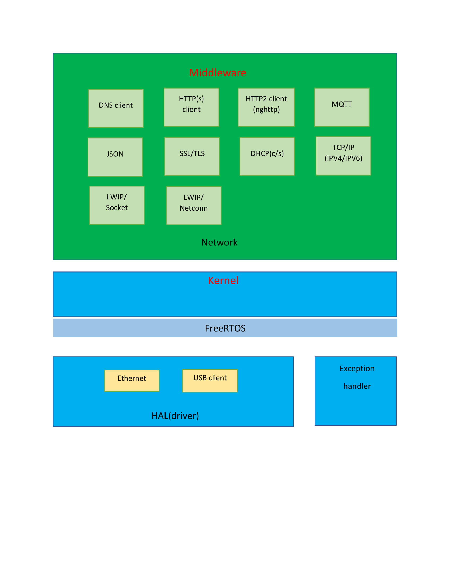

Introduction
OpenRISC is a CPU architecture developed by the OpenCores community. OR1200 is an open-source Verilog implementation of the CPU core, and ORPSoC (OpenRISC Reference Platform System on Chip) combines the OR1200 CPU with a set of peripherals.
Toolchain on the Linux
Dependencies
sudo apt-get install libmpc-dev libgmp3-dev libmpfr-dev lzop libsdl1.2-dev xterm automake libtool
OpenRISC GNU tool chain precompiled for 32-bit Linux
or1k-elf- toolchain built in April 2013 from github sources (150MB)
Extract this under /opt to create the directory or1k-toolchain.
Then run the following to add the executables to your $PATH:
echo "# OpenRISC tool chain path" >> ~/.bashrc
echo "export PATH=$PATH:/opt/or1k-toolchain/bin" >> ~/.bashrc
0. Stack

0.1 Stack structure
├───alexa
│ └───include
├───arch
├───asio
│ └───include
├───audio_player
│ └───include
├───bear_ssl
│ ├───inc
│ ├───src
│ └───tools
├───cjson
│ └───inc
├───common
│ └───include
├───dlna
│ └───include
├───drivers
├───fifo
│ └───include
├───http
│ └───include
├───httpclient
│ ├───inc
│ └───src
├───lwip
│ ├───contrib
│ │ └───port
│ │ └───FreeRTOS
│ │ └───OpenRISC
│ │ └───arch
│ ├───doc
│ └───src
│ ├───api
│ ├───core
│ │ ├───ipv4
│ │ ├───ipv6
│ │ └───snmp
│ ├───include
│ │ ├───ipv4
│ │ │ └───lwip
│ │ ├───ipv6
│ │ │ └───lwip
│ │ ├───lwip
│ │ └───netif
│ └───netif
│ └───ppp
├───mbedtls
│ ├───include
│ │ └───mbedtls
│ ├───library
│ └───port
├───mqtt
│ ├───MQTTClient-C
│ │ ├───samples
│ │ │ └───linux
│ │ └───src
│ │
│ └───MQTTPacket
│ ├───samples
│ ├───src
│ └───test
├───multipart_parser
│ └───include
├───nghttp2
│ ├───lib
│ │ └───includes
│ │ └───nghttp2
│ └───port
│ └───include
├───nghttp_client
│ └───include
├───sntp
│ └───inc
├───Source
│ ├───include
│ └───portable
└───url_parser
└───include
1. RTOS: FreeRTOS
FreeRTOS is a real-time OS that manages a multitasking and multiprocessing system environment. It has a scheduler to manage user created tasks. FreeRTOS provides APIs for users to control, synchronize and communicate among various tasks.
1.1. Features
FreeRTOS supports the following five features to accomplish event/task scheduling and multitasking:
- Task and Scheduler. Each application consists of tasks or threads controlled by the operating system. The multitasking operation is implemented with a scheduler. The scheduler is in the kernel and manages the task execution at a specific time. The kernel can suspend and resume a task many times during lifecycle of the task execution.
- Queue. Queues are the primary forms of inter-task communications. In most cases they are used as thread safe first-in-first-out (FIFO) buffers.
- Semaphore. Threads use semaphores to control the access to shared resources.
- Software Timer. A software timer allows a function to be invoked at a predefined time.
- The timer callback functions are executed within the timer service task. It is essential to ensure the timer callback functions perform lightweight operations and return as quick as possible to avoid blocking the system resources.
- Event Group (enabled after FreeRTOS version 8.0.0). An event group is a set of event bits. Individual event bits within an event group are referenced by a bit number. Event bits are used to indicate if an event has already occurred or not. Event groups can also be used to synchronize tasks.
- For more information on FreeRTOS and its features, please refer to the official website.
1.2. Heap service
heap_4.c is used as the heap service on the SDK. More details can be found in the header file Source\portable
2. TCP/IP: lwIP
TCP/IP (Transmission Control Protocol/Internet Protocol) is a communication internet protocol and can also be used in a private network, either an intranet or an extranet. It provides specifications on how data should be packetized, addressed, transmitted, routed and received at the destination. The current IoT standard is moving towards IP communication and transporting data over various physical layers such as Wi-Fi, IEEE 802.15.4 and Bluetooth.
2.1. Features
lwIP is a widely used open source TCP/IP stack designed for embedded systems. It includes the IP, ICMP, TCP, UDP, IGMP, ARP, AutoIP, DHCP, DNS and SNMP protocols. The SDK provides the following supported features for these protocols.
- IPv4 (LWIP_IPV4).
- UDP (LWIP_UDP): User Datagram Protocol, the widely adopted connectionless transmission protocol.
- TCP (LWIP_TCP): Transmission Control Protocol, a widely used transport protocol providing reliable and in-order delivery.
- ARP (LWIP_ARP).
- ICMP (LWIP_ICMP).
- DHCP (LWIP_DHCP).
- DNS (LWIP_DNS).
- NETCONN (LWIP_NETCONN).
- Socket (LWIP_SOCKET).
2.2. Memory usage
The MEM_SIZE parameter defines the size of the heap memory, PBUF_RAM, stores the sent and received data. If the application requires more data to send, the value of the parameter must be set higher. The values of different control blocks are configurable in lwIP. For example, MEMP_NUM_NETDB sets the concurrent Domain Name Resolution connections. Table 4 lists the current configuration values of these blocks in the SDK. These pools are configured and allocated from a buffer reserved only for the lwIP. The values are set to pass internal performance test and are expected to fulfill most common use cases. However, the number of configured control blocks could limit the maximum concurrent connections created by the network applications in the system, developers can configure these values for a specific use case.
| Name | Current_value |
|---|---|
| MEMP_NUM_UDP_PCB | 4 |
| MEMP_NUM_TCP_PCB | 8 |
| MEMP_NUM_TCP_PCB_LISTEN | 16 |
| MEMP_NUM_TCP_SEB | 255 |
| MEMP_NUM_REASSDATA | 5 |
| MEMP_NUM_NETBUF | 2 |
| MEMP_NUM_NETCONN | 5 |
| MEMP_NUM_TCPIP_MSG_API | 8 |
| MEMP_NUM_TCPIP_MSG_INPKT | 8 |
| MEMP_NUM_SYS_TIMEOUT | 16 |
| MEMP_NUM_NETDB | 4 |
| MEMP_NUM_PBUF | 8 |
| PBUF_POOL_SIZE | 8 |
The required code size of lwIP is listed in Table 5. This information is gathered from an ARM Cortex M4 targeted configuration using the gcc -Os optimization. The feature set is IPv4, TCP, UDP, DHCP client, ICMP, RAW, NETCONN and Sockets and DNS client. The footprint is shown below.
| Static footprint | ROM(bytes) | RAM(bytes) |
|---|---|---|
| Debug rease | 68121 | 59466 |
3. SSL/TLS: mbed TLS
Transport Layer Security (TLS) and its predecessor, Secure Sockets Layer (SSL) are cryptographic protocols designed to provide secure communication over the computer network. TLS and SSL use X.509 certificates and asymmetric cryptography to authenticate secure data communication and to negotiate the process with a symmetric session key that ensure message confidentiality.
mbed TLS offers libraries including SSL/TLS cryptographic communication capabilities for (embedded) devices and applications that provide end-to-end communication protection to the upper layer application protocols such as web browsing, email, instant messaging and voice-over-IP (VoIP).
Starting from the version 2.1.0, mbed TLS is released under Apache 2.0 License and enables developers to use mbed TLS in both open source and closed source projects.
3.1. Features
mbed TLS is an open source and commercial SSL library licensed under ARM Limited. This library easily integrates with new and existing (embedded) devices and applications and provides the building blocks for secure communication, cryptography and key management. Both the client-side and the server-side APIs support current SSL and TLS standards: SSL version 3.0, TLS version 1.0, TLS version 1.1 and TLS version 1.2. The cryptographic algorithms enabled in the SDK include:
- 1) Symmetric encryption algorithms: AES, Triple-DES (3DES), DES, ARC4.
- 2) Modes of operations: Cipher Block Chaining Mode (CBC).
- 3) Hash algorithms: MD5, SHA-1, and SHA-256.
- 4) RSA/PKCS#1 v1.5.
- 5) Random number generation: CTR_DRBG.
3.2. Memory usage
| Memory(Kbytes) | Basic |
|---|---|
| ROM | 78 |
| RAM | 8.7 |
| HEAP | 26 |
4. HTTP (1.1) client: mbed HTTP Client
The Hypertext Transfer Protocol (HTTP) is an application protocol for distributed, collaborative, hypermedia information systems. HTTP is the foundation of data communication for the World Wide Web.
Hypertext is a structured text that uses logical links (hyperlinks) between nodes containing text. HTTP is the protocol to exchange or transfer hypertext.
HTTP/1.1 is the most commonly used version of HTTP and was defined by RFC 2616 in 1999.
4.1. Features
HTTPClient implements the client-side of HTTP/1.1. It provides base interfaces to send HTTP requests and receive HTTP responses from a resource identified by a URI. It also supports HTTPS (HTTP over SSL/TLS) to provide secure communication.
4.2. Memory usage
The static footprint statistics for HTTP client are shown in Table 7, please note that the RAM size is 0 but it allocates the required buffer from system heap during the application execution.
| ROM(Kb) | RAM, static analysis (Kb) | |
|---|---|---|
| Debugging disabled | 3.5 | 0 |
| Debugging Enabled | 7.1 | 0 |
5. HTTP/2 client: nghttp2
HTTP/2 is an alternative to HTTP1.1. HTTP methods, status codes and semantics are the same and it should be possible to use the same APIs as HTTP/1.x (possibly with some small additions) to represent the protocol.
The focus of the protocol is on performance; specifically, end-user perceived latency, network and server resource usage. One major goal is to allow the use of a single connection from browsers to a website.
The basis of the work was SPDY, but HTTP/2 has evolved to take the community’s input into account, incorporating several improvements in the process.
5.1. Features
The framing layer of HTTP/2 is implemented as a reusable C library. On top of that, the SDK includes implementations of an HTTP/2 client, server, proxy, load test and bench marking tools for HTTP/2 and SPDY.
An HPACK encoder and decoder are available as public APIs.
An experimental high level C++ library is also available.
It only enables below features:
- The C library of the HTTP/2 framing layer.
- HPACK encoder and decoder.
5.2. Memory usage
HTTP/2 is a new protocol and therefore it requires more resources in terms of code and heap size. See Table 14 for the required ROM/RAM and heap size.
| ROM (bytes) | RAM,static analysis(bytes) | Heap size | |
|---|---|---|---|
| nghttp2 | 60545 | 1748 | 80kB |
A. Video Demo over FPGA O-board
-1. MQTT TLS on the FreeRTOS
-2. MQTT remote controller from the Cloud